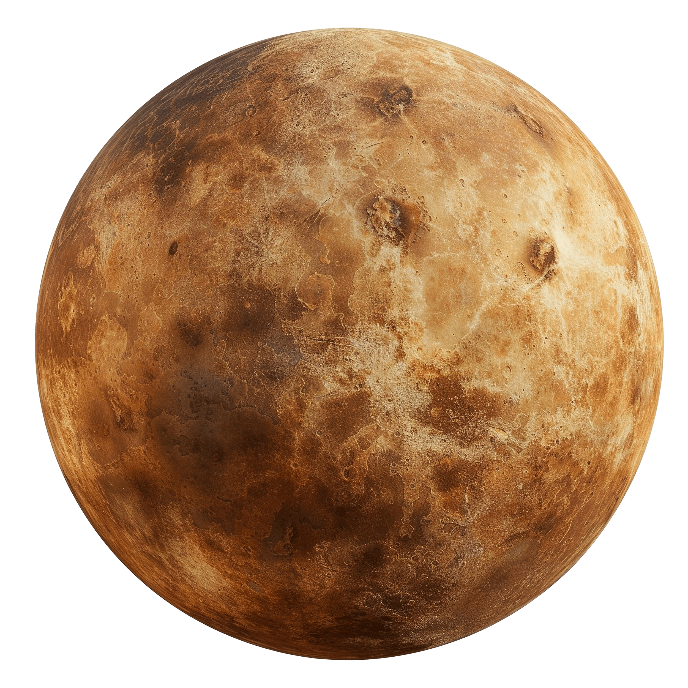

Mercurio |
 |
|
Mercurio es el planeta más pequeño de nuestro sistema solar y el más próximo a nuestra estrella. Es un mundo rocoso y desolado, con una superficie cubierta de cráteres que recuerda mucho a la de nuestra Luna. Debido a que casi no tiene atmósfera para retener el calor, este pequeño planeta experimenta los cambios de temperatura más extremos de todo el vecindario cósmico. Tipo de cuerpo: Planeta rocoso (o terrestre). Edad estimada: 4.600 millones de años (se formó junto con el resto del Sistema Solar). Distancia media al Sol: 57,9 millones de kilómetros (0,39 Unidades Astronómicas). La luz solar tarda apenas unos 3,2 minutos en llegar a su superficie. Diámetro: 4.880 kilómetros (es solo un poco más grande que la Luna de la Tierra; ¡podrían caber casi tres Mercurios dentro de la Tierra!). Masa: Representa apenas el 0,055% de la masa de la Tierra (es decir, nuestro planeta es unas 18 veces más masivo). Temperatura máxima (de día): 430 °C (suficiente para derretir metales como el plomo). Temperatura mínima (de noche): -180 °C (al carecer de una atmósfera densa, el calor acumulado durante el día se escapa rápidamente al espacio). |